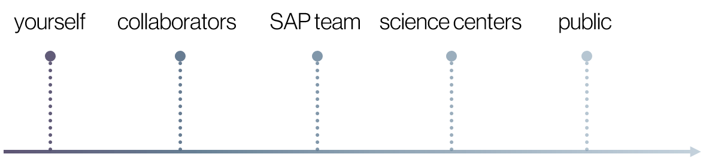
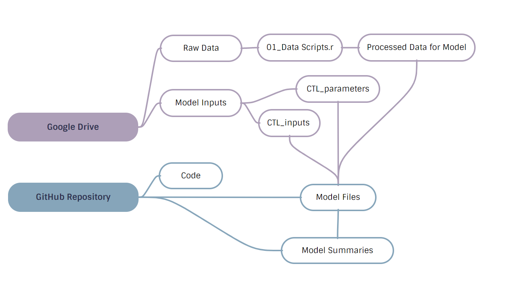
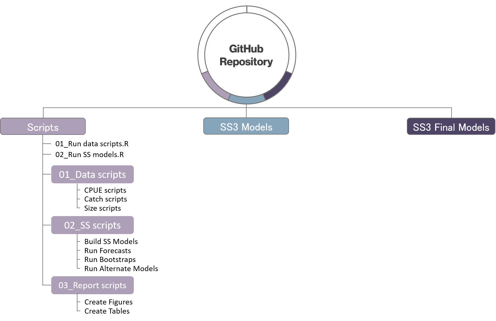
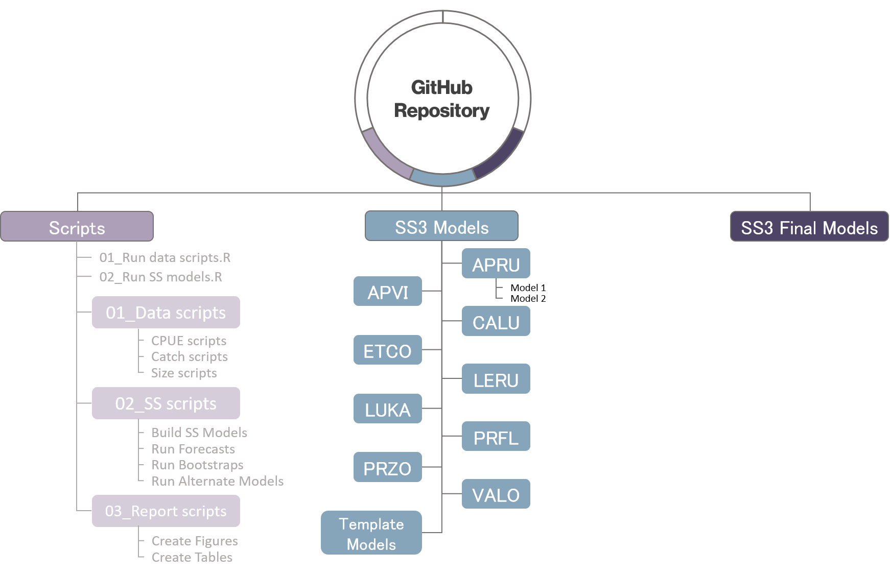
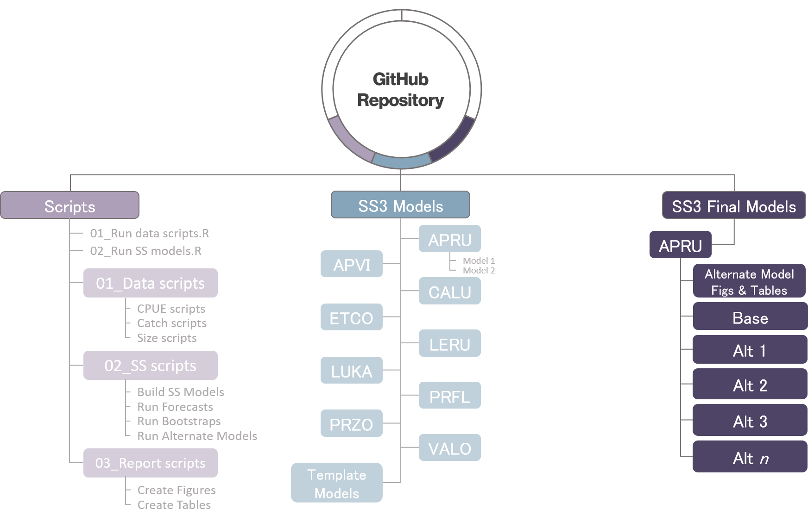
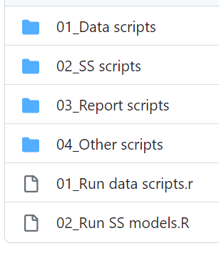
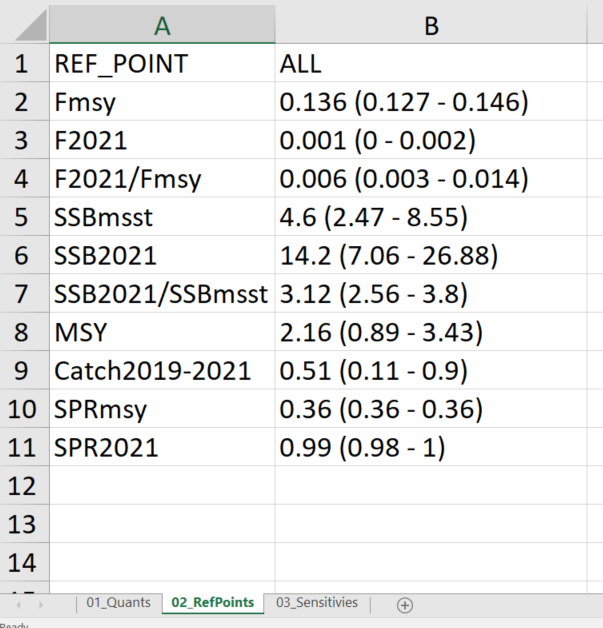

library(googledrive)
library(googlesheets4)
########## DOWNLOAD DATA FROM GOOGLE DRIVE ###############
# Check latest data from Google Drive but only download if its more recent than on local repo
a <- drive_reveal(
drive_ls(
path="https://drive.google.com/drive/u/1/folders/1pnH38cupmDU4O_KkKDhYWee_p4sTSD6u",
pattern="Data"),
what = "modified_time")
a <- arrange(a, by = desc(modified_time))[1,] # Select most recent "Data" zip file
if(dir.exists(file.path(here(..=1),"Data"))){
Date.CurrentFolder <- as_datetime(
file.info(paste0(file.path(here(..=1)),"/Data"))$mtime)
} else {
Date.CurrentFolder <- "1900-01-01 01:01:01 UTC"
}
Date.GoogleFolder <- as_datetime(map_chr(a$drive_resource, "modifiedTime"))
if(Date.CurrentFolder<Date.GoogleFolder){
drive_download(file=a$id,
overwrite = TRUE,
path = file.path(here(..=1),a$name))
unzip(file.path(here(..=1),a$name),
exdir=here(..=1))
} Collaborative Workflow for SAP
When you think workflow
Workflow includes:
- Editor you use to write code
- Name of your home directory
- Git client you use
Products include:
- Raw data
- Packages used for analysis
- Functions you wrote
- Figures and code used to make those figures
- Code someone needs to run to reproduce your results
Don’t hard code anything about workflow into products
Openness as a spectrum
Open Science is the principle and practice of making research products and processes available to all, while respecting diverse cultures, maintaining security and privacy, and fostering collaborations, reproducibility, and equity.
Varying degrees of openness
Practice peer-review
It’s okay to share imperfect code

Tools for Openness
Use the tools we have to make your work as open as possible
Google Drive - good for sharing data among collaborators
- Use R code to pull directly from Google drive into R or onto personal computer
Github repositories - can keep private until published
Open science community
Openscapes training
NMFS R User Group
Benefits of automated workflows
Save time and energy
- Can put your energy towards developing models and not the tedious details
Make things uniform
Makes onboarding easier
Help future us
Helps you avoid mistakes and easier to fix them
Automate as much as possible!
Why SAP should adopt an open and automated workflow
Anyone can download a repository and reproduce our results
Makes it easier during WPSAR reviews to run reviewer requests
Easier onboarding when joining new projects
Helps share the responsibility among the team
Share knowledge within the group
Challenges of American Samoa Bottomfish Assessment
Problems
- Develop 9 individual models that have the same structure but different data and parameter values.
Solutions
- Wrote custom functions to build the model input files and include the correct data and parameter values for each species.
- Develop models simultaneously and update parameter values without having to upload and download new versions of a spreadsheet.
- Set up 2 Google Sheets (inputs and parameters) that we could change and pull the information directly into R with real-time updated information.
- Share quick summaries of each model version easily with people.
- Included pdf reports of summary plots and diagnostics for each model version with 4 input files needed to reproduce those plots.
Our Workflow

Repository Structure

Repository Structure

Repository Structure

Repository Structure

Step 01: Retrieve raw data
Step 02: Process data
########## PROCESS CATCH, CPUE, AND SIZE DATA ################
set.seed(123)
source(paste0(here(..=1),"/Scripts/01_Data scripts/01_CPUE_BBS_InitPrep.r")); rm(list=ls())
source(paste0(here(..=1),"/Scripts/01_Data scripts/02_CPUE_BBS_PropTable.r")); rm(list=ls())
source(paste0(here(..=1),"/Scripts/01_Data scripts/03a_CPUE_BBS_Wind.r")); rm(list=ls())
source(paste0(here(..=1),"/Scripts/01_Data scripts/03b_CPUE_BBS_PCA.r")); rm(list=ls())
source(paste0(here(..=1),"/Scripts/01_Data scripts/04_CPUE_BBS_FinalPrep.r")); rm(list=ls())
source(paste0(here(..=1),"/Scripts/01_Data scripts/06_CATCH_BBS_FinalPrep.r")); rm(list=ls())
set.seed(123)
source(paste0(here(..=1),"/Scripts/01_Data scripts/07_CATCH_SBS_PropTable.r")); rm(list=ls())
source(paste0(here(..=1),"/Scripts/01_Data scripts/08_CATCH_SBS_FinalPrep.r")); rm(list=ls())
source(paste0(here(..=1),"/Scripts/01_Data scripts/09_CATCH_Final.r")); rm(list=ls())
source(paste0(here(..=1),"/Scripts/01_Data scripts/10_SIZE.r")); rm(list=ls())
################ RUN CPUE STANDARDIZATION############################
# Run CPUE standardization and export indices for input into SS
source(paste0(here(..=1),"/Scripts/01_Data scripts/05_CPUE_BBS_Standardize_Function3.r"))
source(paste0(here(..=1),"/Scripts/01_Data scripts/05_CPUE_BBS_Standardize_Function2.r"))
# Run CPUE standardization for all species, areas combined in a loop
root_dir <- root_dir <- this.path::here(.. = 1)
Species.List <- c("APRU","APVI","CALU","ETCO","LERU","LUKA","PRFL","PRZO","VALO")
for(i in 1:length(Species.List)){
Standardize_CPUE3(Sp=Species.List[i],Interaction=T,minYr=1988,maxYr=2015)
}Step 03: Set input arguments
Arguments we rarely changed
Lt <-vector("list",9) # Species options
Lt[[1]]<-list("APRU", #Name
"SW_Then", #M
"SW_BBS_BIOS", #Growth
"Kamikawa", #Length-Weight
"SW_BBS_BIOS", #Maturity
F, #Use InitF?
c(0.5,1.6), #Range of R0 prof.
0.29, #Btarg. value
T, #Include superyears?
list(c(2019,2020)),#Blocks of superyears
c(2.5,5.5,0.2)) #Proj catch rangeArguments we changed frequently
DirName <- "65_Base" # Name of directory
runmodels <- T # Run ss.exe
printreport<- T # Run ss_diags report
Create_species_report_figs <- F # Produce formatted
#figures and tables
#word document
N_boot <- 0 # Bootstrap on/off
N_foreyrs <- 0 # Nyears for forecast
RD <- F # Run diagnostics
ProfRes <- .1 # R0 profile resolution
profile <- "SR_LN(R0)" # Parameter to profile
Begin <- c(1967,1986)[1] #Model start year
DeleteForecastFiles <- T #Remove extra filesStep 04: Build models and run
The core function is
Build_All_SS()Wrapper function for modular functions:
Build_Data(),Build_Control(),Build_Starter(),Build_Forecast()
Incorporate parameter information stored in Google Sheets
if(readGoogle == T){ ctl.params <- read_sheet("1XvzGtPls8hnHHGk7nmVwhggom4Y1Zp-gOHNw4ncUs8E", sheet=species) ctl.inputs <- read_sheet("11lPJV7Ub9eoGbYjoPNRpcpeWUM5RYl4W65rHHFcQ9fQ", sheet=scenario) }else{ ctl.inputs <- readxl::read_excel(file.path(root_dir, "Data", "CTL_inputs.xlsx"), sheet=scenario) ctl.params <- readxl::read_excel(file.path(root_dir, "Data", "CTL_parameters.xlsx"), sheet=species) }
Modular code
Created “smaller” functions for each step
Used the main function as a wrapper so could run everything from 1 script and easy to turn functions on and off
bootstraps
diagnostics
forecasting
alternate models
summary reports
creating specific plots and tables

Step 05: Produce model diagnostics reports
r4ss::SS_plots()Created a custom qmd with model diagnostic plots and tables
- runs test, likelihood profiles, retrospectives, jitters, etc.
Created html and pdf versions
- PDFs were synced with the repository so anyone could look at the diagnostics for a certain model without cloning the repository onto their computer
Step 06: Generate formatted tables and figures
Quarto document produced a .docx with figures and tables formatted for the report
library(openxlsx)
library(flextable)
set_flextable_defaults(
font.size = 11, font.family = "Arial",
border.color = "black", font.color = "black")
border <- officer::fp_border()
refpoints <- read.xlsx(file.path("./", "scr", "01_tables.xlsx"),
sheet = "02_RefPoints")
refpoints.ft <- flextable(refpoints)
refpoints.ft <- set_header_labels(refpoints.ft, REF_POINT = "Reference point", ALL = "Value")
refpoints.ft <- hline_bottom(refpoints.ft, border = border)
refpoints.ft <- hline_top(refpoints.ft, border = border, part = "header")
refpoints.ft <- hline_bottom(refpoints.ft, border = border, part = "header")
refpoints.ft <- compose(refpoints.ft, i = 1, j = 1, part = "body",
value = as_paragraph(as_i("F"), as_sub("MSY"),
" (yr", as_sup("-1"), ")"))
refpoints.ft <- compose(refpoints.ft, i = 4, j = 1, part = "body",
value = as_paragraph(as_i("SSB"), as_sub("MSST")))Formatted tables for report


Lessons learned in our process
Use packages that work with all platforms of R
Make functions flexible enough to give you options but don’t worry about coding every single possibility
Develop as you go, streamline as you go
Make code modular
Small changes you can implement now
More comments, or use software such as Quarto or RMarkdown for literate programming
Read other people’s code
Make sure you are using relative paths and including all the packages you used in that script
When naming scripts, give them informative names and try sequencing them
Get in the habit of syncing code with repository regularly
Discussion points
Is this system useful for single-species assessments?
- I think its useful for any assessment with more than 1 person working on it
How can we help each other with setting these systems up?
coworking time in small groups
set up GitHub repository templates for a common set-up
How can this be useful for international assessments?
What about reference manager software?
What are some good tools people use for project management?
- GitHub Projects